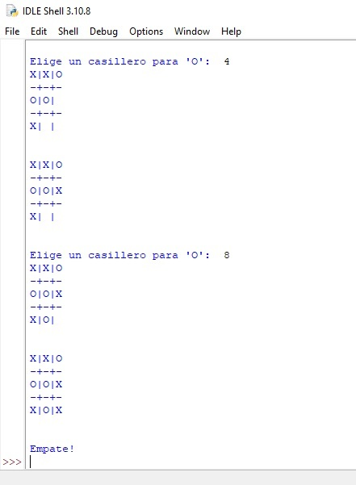

<div style="background-color: #5DADE2;">
    <div class="row">
            <h1>Proyectos</h1>
            <div class="col-sm-12 col-md-5 col-lg-5 texto" style="margin-left: 5%;">
                <h2>Tateti /3 en línea con inteligencia artificial</h2>
                <p>
                    Adapté un proyecto del clásico juego del TaTeTi con inteligencia artificial por medio de un algoritmo minimax y lo hice más eficiente.
                </p>
            </div>
            <div class="col-sm-12 col-md-5 col-lg-5 imagen">
                

            </div>
    </div>
</div>